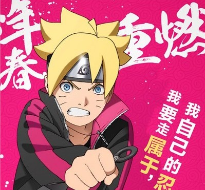

首页
剧情简介
火影疾风传
火影新世代
视频欣赏
注册

漩涡博人
鸣人和雏田的儿子，性格好胜，富有忍者才能的少年博人，自认天赋过人强于父亲，却被鸣人拜托好友佐助替其调教，称呼父亲鸣人为“臭老爸”并讨厌着他，反抗鸣人，扬言将来唯独不要成为火影。
BORUTO -火影新世代
随着和平的到来而走向近代化的木叶隐村。高楼林立，巨大显示屏中播放出影像，连结各区域的电车在村里奔驰。虽说是忍者村，但一般民众也增多，忍者的生存方式也在逐渐改变着。
动漫主要讲述了《火影忍者》主角漩涡鸣人的儿子，漩涡博人的故事。忍者因为和平时代的到来，不再如往日重要。忍者学校也开始设立普通班。在这样一个和平的时代，博人选择了尾随自己父亲的脚印，成为忍者。
故事以这样的背景展开，但逐渐，一切又不和平了起来。博人能否应对呢？他会成为新时代的英雄吗？